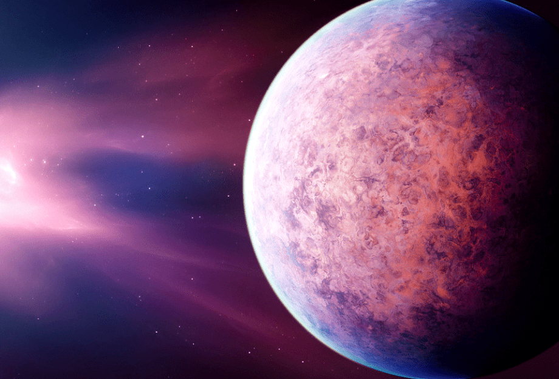
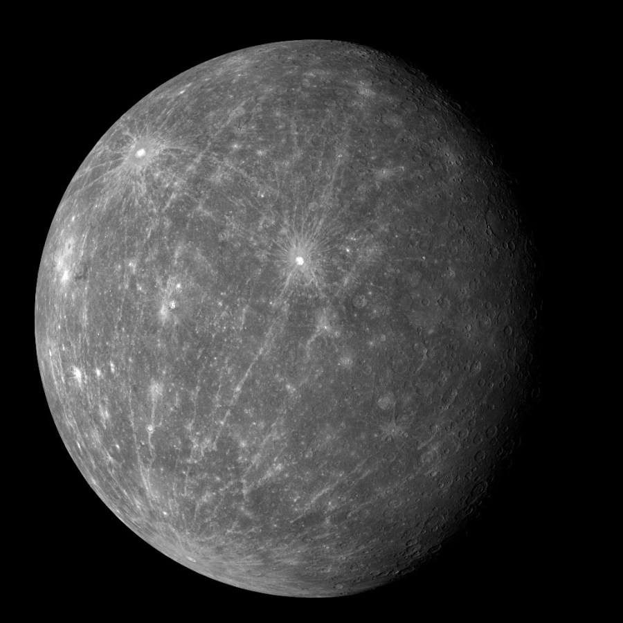
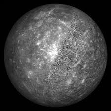
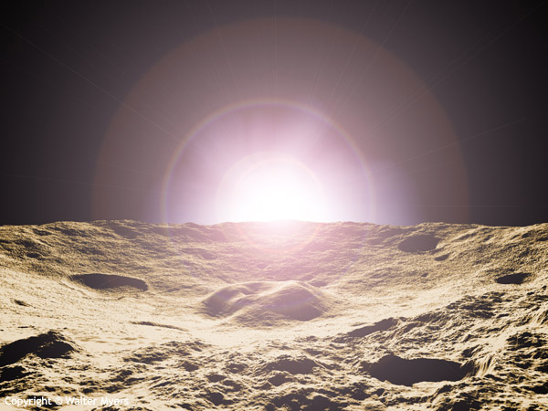
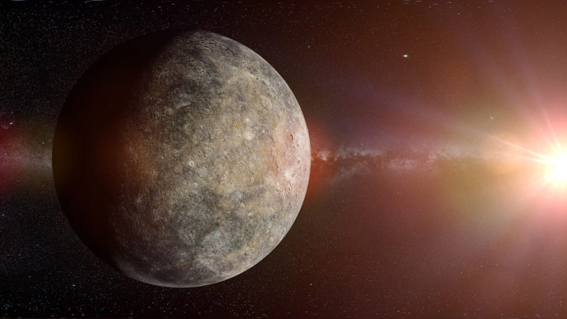
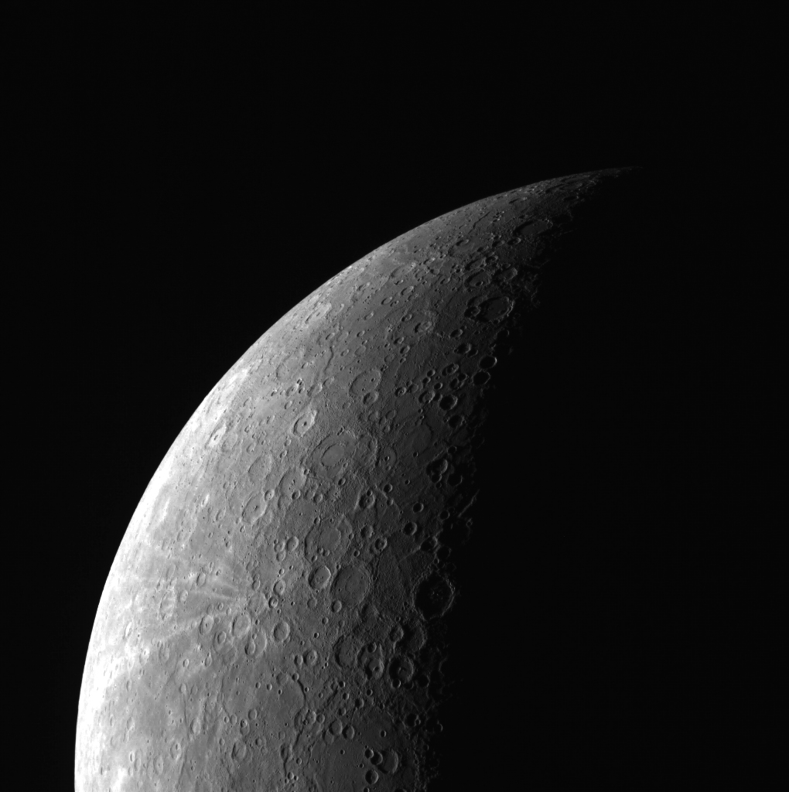

Как появился Меркурий
×
Меркурий, Венера, Земля и Марс представляют собой внутреннею планетарную систему, так как эти планеты приближенные к Солнцу, и они впитывали в себя более тяжелые элементы и по итогу сформировались твердыми. В начале, солнечная система была водородным облаком, понемногу облако раскалялось, создав кольца из газа и пыли. Затем маленькие пылинки материи при столкновении с другими, становились крупнее, они создавали планеты. Так 4.5 миллиарда лет назад сформировался Меркурий - самая близкая к солнцу планета.

Общие сведения
×
Меркурий - самая маленькая планета Солнечной системы - ее диаметр составляет 5000 км., это на 60% меньше диаметра Земли, он не много больше Луны. Но также является самой твердой планетой Солнечной системы, ядро Меркурия сопоставимо земному ядру и на 70% состоит из железа. Существует предположение, что на раннем этапе развития.
Меркурий столкнулся с объектом размером с планету, после чего верхнее слои улетели в космос, оставив только железное ядро, а частицы со временем притянуло Солнце. Меркурий относится к планетам земной группы. По своим физическим характеристикам Меркурий напоминает Луну. У него нет естественных спутников, но есть очень разрежённая атмосфера. Планета обладает крупным железным ядром, являющимся источником магнитного поля, напряжённость которого составляет 0,01 от земного магнитного поля. Ядро Меркурия составляет 83 % от всего объёма планеты. Температура на поверхности Меркурия колеблется от 80 до 700 К (от −190 до +430 °C). Солнечная сторона нагревается гораздо больше, чем полярные области и обратная сторона планеты.

История меркурия
×
Как и у Земли, Луны и Марса, геологическая история Меркурия разделена на периоды (понятие эр используется только для Земли). Это деление установлено по относительному возрасту деталей рельефа планеты. Их абсолютный возраст, измеряемый в годах и оцениваемый по концентрации кратеров, известен с низкой точностью. Эти периоды названы по именам характерных кратеров. Их последовательность (от более ранних к более поздним, с датировками начала): дотолстовский (~4,5 млрд лет назад), толстовский (4,20–3,80 млрд лет назад), калорский (3,87–3,75 млрд лет назад), мансурский (3,24–3,11 млрд лет назад) и койперский (2,2–1,25 млрд лет назад).

Природные условия
×
Близость к Солнцу и довольно медленное вращение планеты, а также крайне разрежённая атмосфера приводят к тому, что на Меркурии наблюдаются самые резкие перепады температур в Солнечной системе. Этому способствует также рыхлая поверхность Меркурия, которая плохо проводит тепло (а при практически отсутствующей атмосфере тепло может передаваться вглубь только за счёт теплопроводности). Поверхность планеты быстро нагревается и остывает, но уже на глубине в 1 м суточные колебания перестают ощущаться, а температура становится стабильной, равной приблизительно +75 °C.
Средняя температура его дневной поверхности равна 623 К (349,9 °C), ночной — 103 К (−170,2 °C). Минимальная температура на Меркурии равна 90 К (−183,2 °C), а максимум, достигаемый в полдень на «горячих долготах» при нахождении планеты близ перигелия, — 700 К (426,9 °C).
Несмотря на такие условия, в последнее время появились предположения о том, что на поверхности Меркурия может существовать лёд. Радарные исследования приполярных областей планеты показали наличие там участков деполяризации от 50 до 150 км, наиболее вероятным кандидатом отражающего радиоволны вещества может являться обычный водяной лёд. Поступая на поверхность Меркурия при ударах о неё комет, вода испаряется и путешествует по планете, пока не замёрзнет в полярных областях на дне глубоких кратеров, куда никогда не заглядывает Солнце, и где лёд может сохраняться практически неограниченно долго.

Геология и внутреннее строение
×
До недавнего времени предполагалось, что в недрах Меркурия находится твёрдое металлическое ядро радиусом 1800—1900 км, содержащее 60 % массы планеты, так как КА «Маринер-10» обнаружил слабое магнитное поле, и считалось, что планета с таким малым размером не может иметь жидкого металлического ядра. Но в 2007 году группа Жана-Люка Марго подвела итоги пятилетних радарных наблюдений за Меркурием, в ходе которых были замечены вариации вращения планеты, слишком большие для модели недр планеты с твёрдым ядром. Поэтому сегодня можно с высокой долей уверенности говорить, что ядро планеты именно жидкое.
Ядро окружено силикатной мантией толщиной 500—600 км. Согласно данным «Маринера-10» и наблюдениям с Земли толщина коры планеты составляет от 100 до 300 км. Анализ данных, собранных зондом «Мессенджер», с использованием модели изостазии Эйри показал, что толщина коры Меркурия составляет 26 ± 11 км.
Жидкое железно-никелевое ядро Меркурия составляет около 3/4 его диаметра, что примерно равно размеру Луны. Оно очень массивное по сравнению с ядром других планет.

Поверхность
×
Поверхность Меркурия во многом напоминает лунную — она сильно кратерирована. Плотность кратеров на поверхности различна на разных участках. От молодых кратеров, как и у кратеров на Луне в разные стороны тянутся светлые лучи. Предполагается, что более густо усеянные кратерами участки являются более древними, а менее густо усеянные — более молодыми, образовавшимися при затоплении лавой более старой поверхности. В то же время крупные кратеры встречаются на Меркурии реже, чем на Луне. Самый большой кратер на Меркурии — бассейн равнины Жары (1525×1315 км). Среди кратеров с собственным именем первое место занимает вдвое меньший кратер Рембрандт, его поперечник составляет 716 км. Однако сходство Меркурия и Луны неполное — на Меркурии существуют образования, которые на Луне не встречаются.
Важным различием гористых ландшафтов Меркурия и Луны является присутствие на Меркурии многочисленных зубчатых откосов, простирающихся на сотни километров, — уступов (эскарпов). Изучение их структуры показало, что они образовались при сжатии, сопровождавшем остывание планеты, в результате которого площадь поверхности Меркурия уменьшилась на 1 %. Наличие на поверхности Меркурия хорошо сохранившихся больших кратеров говорит о том, что в течение последних 3—4 млрд лет там не происходило в широких масштабах движение участков коры, а также отсутствовала эрозия поверхности, последнее почти полностью исключает возможность существования в истории Меркурия сколько-нибудь существенной атмосферы.